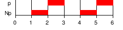
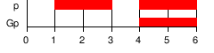
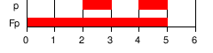
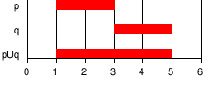
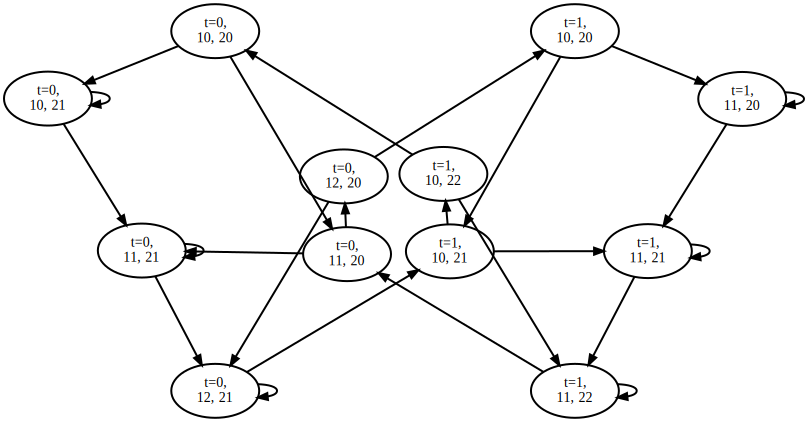
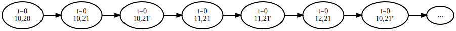
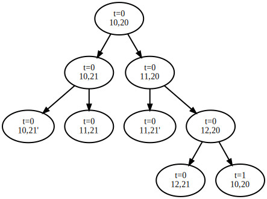
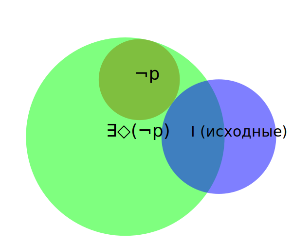
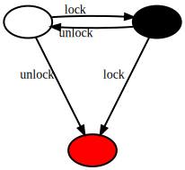
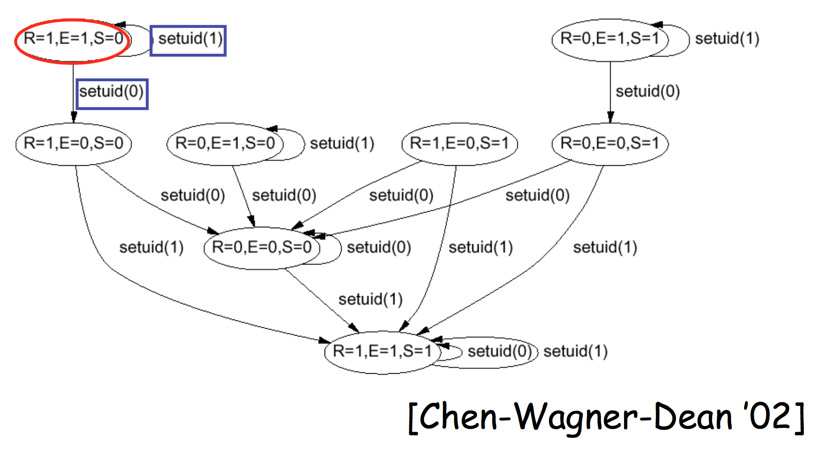

Математические модели вычислений
Введение в Model Checking. Темпоральные логики LTL и CTL
Software Model Checking via Counterexample Guided Abstraction Refinement
Источники
Классическая книга: Clarke E.M., Grumberg O., Peled D.A. Model Checking. Cambridge, Mass: The MIT Press, 1999. 314 p. Э.М. Кларк и др. Верификация моделей программ. Model checking. М.:МЦНМО, 2002.
Презентации: Bor-Yuh Evan Chang https://www.cs.colorado.edu/~bec/courses/csci5535/meetings/meeting03.pdf https://www.cs.colorado.edu/~bec/courses/csci5535/meetings/meeting04.pdf
Model checking
Верификация моделей программ
— подход, обеспечивающий выполнение требуемых свойств путём исчерпывающей проверки всего возможного множества состояний.
На настоящее время наиболее успешно используемый на практике подход к формальной верификации программного обеспечения.
Общие принципы Model Checking
Задача — верификация свойств программ или поиск ошибок в программах.
Автоматизированный подход, который:
верифицирует модели состояний и переходов,
обеспечивает выполнение темпоральных свойств (свойств, которые формулируются в понятиях «до» и «после» некоторого состояния).
Выполняет фальсификацию гипотезы путём генерации контрпримеров.
Замечание: Фальсифицируемость
К. Поппер, 1935 г. — один из современных критериев научности теории (гипотезы).
Теория научна, если она удовлетворяет критерию фальсифицируемости — принципиально может быть поставлен тот или иной эксперимент, один из возможных исходов которого опровергает теорию.
Модели состояний и переходов
Простейший пример — конечные автоматы.
Более сложный — сети Петри:

Сети Петри
— математический аппарат для описания динамических распределённых систем. Представляет собой ориентированный двудольный (мульти)граф, состоящий из вершин двух типов: позиции (состояния; обозначаются, как правило, окружностями) и переходы (события; обозначаются прямоугольниками).
В позициях может находиться определенное количество фишек. Для активации перехода необходимо, чтобы во всех позициях до перехода было заданное число фишек. Переходы могут активироваться одновременно или по одному; после активации перехода заданное количество фишек переносится из позиции до перехода в позицию после перехода. Переходы могут быть помечены условиями (например, может активироваться только если в предыдущей позиции не менее 5 фишек).
Применение: анализ конкурентных систем; анализ систем массового обслуживания.
В зависимости от задачи, можно исследовать, например: достижимость одной позиции из другой; ограничения на обрабатываемый поток; корректность синхронизации процессов.
Сети Петри: примеры
Моделирование энергосетей на солнечной энергетике: https://solar-nets.herokuapp.com/
Web-визуализатор: http://blkdev2.github.io/petri-nets/
Один из OpenSource-редакторов: https://github.com/matmas/pneditor
Темпоральная логика
Обычные логические операторы
| Оператор | Описание | Значения |
|---|---|---|
| ¬ A | Не A | ¬0 = 1, ¬1 = 0 |
| A ∧ B | A и B | (0 ∧ 0) = (0 ∧ 1) = (1 ∧ 0) = 0; (1 ∧ 1) = 1 |
| A ∨ B | A или B | (0 ∨ 0) = 0; (0 ∨ 1) = (1 ∨ 0) = (1 ∨ 1) = 1 |
| A → B | Из A следует B | (0 → 0) = (0 → 1) = (1 → 1 )= 1; (1 → 0) = 0 |
Темпоральная логика
В темпоральной логике переменные — последовательности логических переменных, т.е. A на самом деле — это множество состояний Ai в i-е моменты времени.
| Оператор | Описание | Диаграмма |
|---|---|---|
| X α , ◯α | α будет верно в следующем состоянии |  |
| G α , □ α | α верно во всех следующих состояниях |  |
| F α , ◇ α | α будет верно в одном из следующих состояний |  |
| ε U δ | ε верно до некоторого состояния, после которого становится верно δ |  |
Темпоральная логика
Позволяет выразить свойства, связанные со временем, такие как «инвариантность» и «гарантированная достижимость».
α — инвариант (invariant) для данного состояния i, если начиная с этого состояния α выполняется во всех последующих на любом возможном пути исполнения.
α гарантированно достижимо (eventual, «когда-нибудь произойдёт») из данного состояния i, если на любом пути исполнения начиная с этого состояния найдётся хотя бы одно состояние, в котором выполняется α.
Пример — параллельная программа
- Два процесса выполняются параллельно.
- В общей памяти задана переменная
turn. - Общая переменная используется для определения критической секции, в которой в каждый момент времени может находиться только один поток.
10: while(true) {
11: wait(turn == 0)
// Критическая секция
12: work(); turn = 1
13: }20: while(true) {
21: wait(turn == 1)
// Критическая секция
22: work(); turn = 0
23: }Граф достижимых состояний примера
Состояние — все возможные сочетания значения переменной turn и счётчиков инструкций двух процессов.

10: while(true) {
11: wait(turn == 0)
// Критическая секция
12: work(); turn = 1
13: }
||
20: while(true) {
21: wait(turn == 1)
// Критическая секция
22: work(); turn = 0
23: }Модель состояний и переходов
Напоминает недетерминированный автомат со специальными метками на состояниях:
T = (S, I ⊆ S, R ⊆ S × S, L : S → 2AP)
- S — множество состояний (конфигураций)
- I — начальные состояния
- R — переходы
- L — функция аннотаций (labeling function)
- AP — множество атомарных утверждений о программе (например, x=5)
- описывают основные утверждения
- для программ обычно — в терминах значений переменных
- функция аннотаций помечает каждое состояние множеством истинных в этом состоянии атомарных утверждений
Примеры свойств
- во всех достижимых конфигурациях системы два процесса никогда не находятся одновременно в критической секции (
pc1=12,pc2=22— атомарные утверждения «процесс находится в критической секции»)Invariant(¬(pc1 = 12 ∧ pc2=22)) - первый процесс обязательно попадёт в критическую секцию
Eventually(pc1 = 12)
Пути исполнения
Путь в модели состояний и переходов — это бесконечная последовательность состояний, последовательно связанных переходами: (s0, s1, s2, …) (si, si + 1) ∈ R
Путь исполнения — путь, который начинается из начального состояния (s0 ∈ I)
Дополнительно к уже рассмотренным операторам темпоральной логики можно ввести квантификацию по путям (∀ x, ∃ x)
Отношения выводимости
В «обычной» логике, как на прошлом занятии: A, B, C ⊦ D — D выводимо при наличии выводов A, B, C.
В темпоральной логике вводится следующее отношение: h ⊧ p Для пути h выполняется предикат p.
Пример (1): ∀ h . h ⊧ G (¬ (pc1 = 12 ∧ pc2 = 22))
Linear Time Logic
LTL (Linear Time Logic) — путь рассматривается как линейная последовательность переходов, значение предикатов определено на путях.

Computational Tree Logic
CTL (Computational Tree Logic) — рассматривается дерево всех возможных путей; именно в этой логике используется квантификация по путям.

Вычислительная сложность
Для множества состояний S и переходов R проверить, удовлетворяет ли модель формуле f можно за время: O(|f| · (|S| + |R|))
Сложность растёт линейно по отношению к размеру модели состояний и переходов.
Однако размер модели состояний и переходов растёт экспоненциально по отношению к количеству переменных и числу параллельных процессов.
Основная проблема model checking — проблема «комбинаторного взрыва» количества состояний.
Проверка утверждений с кванторами
Квантифицированные свойства = неподвижные точки
∀□(p) ≡ ∃◇(¬p) (p — глобальный инвариант = не существует состояния, из которого достижимо другое состояние, в котором p — не выполняется)
Алгоритм:
- Положим Func : 2S → 2S, Func(Z) ≡ ¬p ∪ состояния, из которых Z достижимо за один шаг.
- Вычислим ∃F(¬p) как наименьшую неподвижную точку Func:
- начинаем с Z=⊘ , применяем Func, пока не дойдём до неподвижной точки (Func(Z') = Z')
Неподвижные точки

Symbolic Model Checking
Символьная верификация моделей
- множества состояний и отношение перехода представляются в виде булевых формул
- неподвижные точки можно вычислить итеративной подстановкой в такие формулы
- пример средства — SMV (Symbolic Model Verifier), выполняет проверку свойств в логике CTL с использованием бинарных диаграмм решений (Binary Decision Diagrams, BDD)
- BDD используются для представления множества в виде функции принадлежности
Binary Decision Diagrams
Бинарные диаграммы решений

Binary Decision Diagrams
- дизъюнкция и конъюнкция формул вычисляется не более чем за квадратичное время
- отрицание — за константное время (очевидно — поменяем местами 0 и 1)
- проверка эквивалентности формул — константа или линейное время
- образ (выполнимость; множество всех значений переменных, при которых формула выполняется) — может быть экспоненциальным
Software Model Checking via Counterexample Guided Abstraction Refinement (SLAM)
приблизительно — «Верификация моделей программ с использованием абстракции и уточнения по контрпримерам»
Реализация — анализатор BLAST (Berkeley Lazy Abstraction Software verification Tool), разработан в Беркли; после этого поддерживался в России, в ИСП РАН.
Статья с примером работы BLAST
Развитие BLAS — верификатор CPAChecker
Общие принципы SLAM
- Входные данные
- программа (на языке C!)
- частичная спецификация (задаётся в виде модели состояний и переходов, более-менее в терминах атомарных утверждений — «программа использует блокировки корректно», а не «программа реализует Web-сервер»)
- Выходные данные
- программа удовлетворяет спецификации (в некоторых случаях возможно получить доказательство)
- есть контрпример — конкретный путь исполнения программы, нарушающий спецификацию
- Схема работы
- преобразуем программу в набор формул алгебры логики («булевскую программу»)
- проверяем выполнение спецификации
- нет ошибок в булевской программе — значит нет ошибок в оригинальной
- возможны ложные положительные
Свойство 1 — двойная блокировка

Повторный вызов lock или unlock приводит к deadlock.
Свойство: вызовы lock и unlock должны чередоваться.
Свойство 2
понижение привилегий суперпользователя
Произвольные пользовательские приложения не должны быть запущены с привилегиями суперпользователя. Свойство: при вызове execv всегда suid ≠ 0. 
Псевдокод SLAM
SLAM(Program p, Spec s) =
Program q = incorporate_spec(p,s);
PredicateSet abs = { };
while true do
BooleanProgram b = abstract(q,abs);
match model_check(b) with // используются внешние инструментальные средства
| No_Error ⇒ print(“no bug”); exit(0)
| Counterexample(c) ⇒
if is_valid_path(c, p) then
print(“real bug”); exit(1)
else
abs ← abs ∪ new_preds(c)
doneЧуть подробнее (на английском языке) — здесь, со страницы 8: https://www.cs.colorado.edu/~bec/courses/csci5535/meetings/meeting04.pdf
Инструментальные средства: SAT-решатели
Задача выполнимости булевских формул (Boolean Satisfiability Problem, SAT) — по данной (сложной, с большим количеством переменных) формуле алгебры логики определить, существует ли такой набор переменных, что при подстановке формула принимает истинное значение.
Эта задача разрешима, но принадлежит к классу сложности NP. Есть алгоритм, который решает задачу (полный перебор), но для интересных на практике формул он имеет недопустимо большую (экспоненциальную по числу переменных) сложность. Более того, задача SAT NP-полна, т.е. любая задача из класса NP сводится к SAT за полиномиальное время (полином постоянной степени от размера задачи; это значит «относительно быстро»).
На практике используются эвристические алгоритмы, в которых на основе тех или иных соображений постепенно снижается мощность множества для перебора.
http://www.satcompetition.org/ — сравнение эвристических SAT-решателей в форме состязания.
SMT-решатели
SAT-решатели оперируют формулами алгебры логики, а на практике часто хочется работать с более выразительными системами (хотя бы с логикой первого порядка).
Задача выполнимости формул в теориях (satisfiability modulo theories) — по данной формуле в терминах логики первого порядка с равенством и набором некоторых условий первого порядка на предикатные и функциональные символы определить, существует ли такой набор переменных, что при подстановке формула принимает истинное значение в любой сигнатуре, удовлетворяющей условиям.
Может использоваться как в методах model checking наподобие SLAM, так и в компьютерной матматике, для получения доказательств или контрпримеров к теоремам.
Один из популярных SMT-решателей на настоящее время — Z3 от Microsoft Research (https://github.com/Z3Prover/z3).
http://www.rise4fun.com/iZ3/even_odd http://www.rise4fun.com/iZ3/tutorial/guide
Выводы
- Model checking — хороший, работающий на практике подход
- Проблема экспоненциального взрыва состояний
- Проблема абстракции и уточнения
- Главная (на мой взгляд) проблема — очень низкоуровневое описание свойств
Обычно хочется всё-так доказывать свойства вида «эта программа — web-сервер, понимающий стандарт HTTP 1.1», а лучше даже — «этот комплекс программ реализует сайт, на котором обычный пользователь не может получить доступ к закрытым от него данным». Это не всегда возможно, но нужно стремиться к этому.
Задачи
Задача 5.1а* Вручную перевести реализацию одного из алгоритмов сортировки (быстрая сортировка, сортировка слиянием, пирамидальная сортировка, пузырьковая сортировка) в терминах SMT-решателя (например, Z3) и попытаться проверить корректность реализации.
Задача 5.1б** Аналогично — для поразрядной сортировки (radix sort).
Задача 5.2** Представить пример доказательства не совсем тривиального свойства для не совсем тривиальной программы на используемых на практике языках программирования :) (> 40 строк кода без учёта комментариев и пустых строк) с использованием CPAChecker или других средств model checking. Пример, с которого можно начать
Требуется самостоятельно установить одно из средств model checking, просмотреть документацию по нему, расширить приведённые примеры (или придумать свой) и написать мини-отчёт объёмом от 1000 букв текста на русском языке.
Например, интересно было бы проверить корректность тех же реализации сортировки.